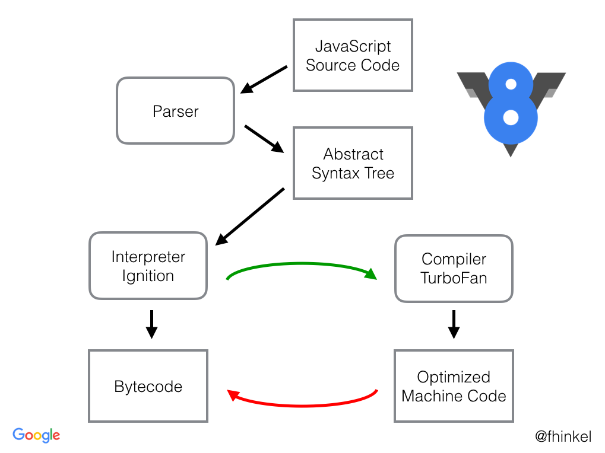

Jardinagem de Árvores Abstratas
Link da palestra

Um pouco sobre o jardineiro
- Bairro Felicidade, Belo Horizonte
- PSL-MG, Minas Livre, Encontro Mineiro de Software Livre
- Ministério da Cultura, Cultura Digital
- Governo do Rio Grande do Sul, Gabinete Digital
- Uma meia dúzia de startups, Burnout :(
- Recurse Center
- Datadog
Façamos uma pequena linguagem de programação
Por que? Pra que? Pra quem?
Este é um papo informal
Arquitetura geral de uma linguagem de programação

A linguagem alvo pode ser ou uma linguagem textual, ou código de máquina (Bytecode, Assembly).
Execução
- Interpretador de Árvores: Exemplo
- Interpretador de Bytecode: Exemplo
- Código de Máquina (Assembly): Intel x86, ARM, RISC-V, etc
Exemplos
texto pra texto

texto pra bytecode

texto pra bytecode
A JVM √© alvo de vários compiladores: Java, Clojure, Kotlin, Scala, Groovy, Jython, etc…

Chrome's v8: everything all at once

Parsing
Transforma lista de caracteres em árvore de tokens
parse(input: string) Node
- Algorítmos Bottom-Up or Top-Down
- Escrito à mão ou gerado a partir de uma gramática
- Context Free Grammars (LR, LL, …)
- Parsing Expression Grammars
Parsing Expression Grammars
Gramáticas
e.g.: Parser de CSV
| Gramática | Entrada | Resultado |
|---|---|---|
|
|
|
Expressões
| sequence | e1 e2 |
|
| ordered choice | e1 / e2 |
|
| not predicate | !e |
|
| and predicate | &e |
(sugar for !!e) |
| zero or more | e* |
|
| one or more | e+ |
(sugar for ee*) |
| optional | e? |
(sugar for &ee / !e) |
Expressões Aritméticas
1 + 2 * 3 = 7
(1 + 2) * 3 = 9
Primeiros Arbustos
| 1 + 2 * 3 = 7 | (1 + 2) * 3 = 9 |
|---|---|
|
|
|
Propriedades de Operadores
- Aridade
- Precedência
- Associatividade
Notações de Expressões
- infix
- prefix
- postfix
Prefix
+ 1 * 2 3 = 7
* + 1 2 3 = 9
Quem usa notação prefix?
lisp é um exemplo
(+ 1 (* 2 3))
(* 3 (+ 1 2))
Postfix
3 2 * 1 + = 7
1 2 + 3 * = 9
Quem usa notação postfix?
Máquina de Pilha
| 3 2 * 1 + = 7 | 2 1 + 3 * = 9 |
|---|---|
|
|
Pilhas

Array.push() e Array.pop()
Funções Primitivas
| Textual | Máquina de Pilha |
|---|---|
|
|
Variáveis
| Textual | Máquina de Pilha |
|---|---|
|
|
Condicionais: Galhos (Branches)
| Textual | Máquina de Pilha |
|---|---|
|
|
Repetições
| Textual | Máquina de Pilha |
|---|---|
|
|
Funções
| Textual | Máquina de Pilha |
|---|---|
|
|